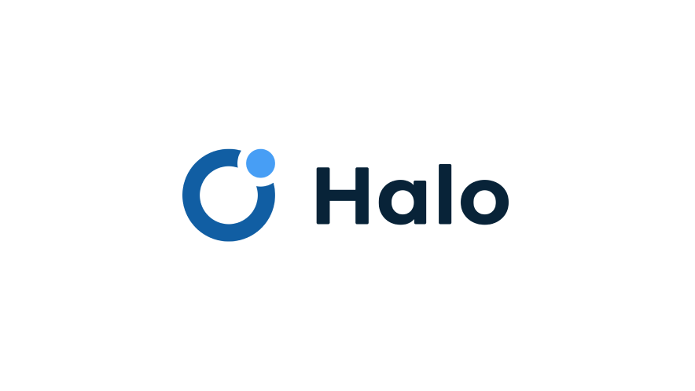
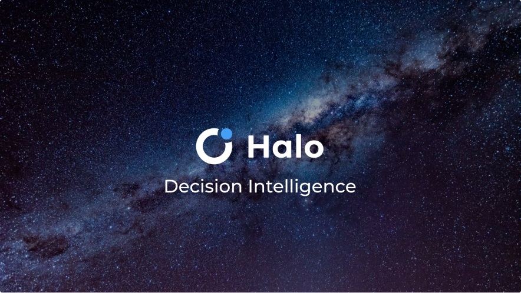
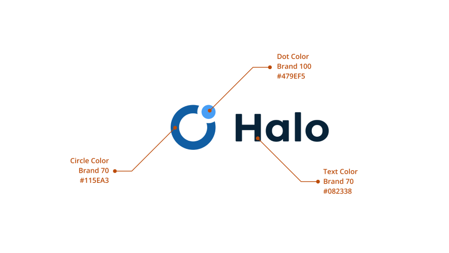
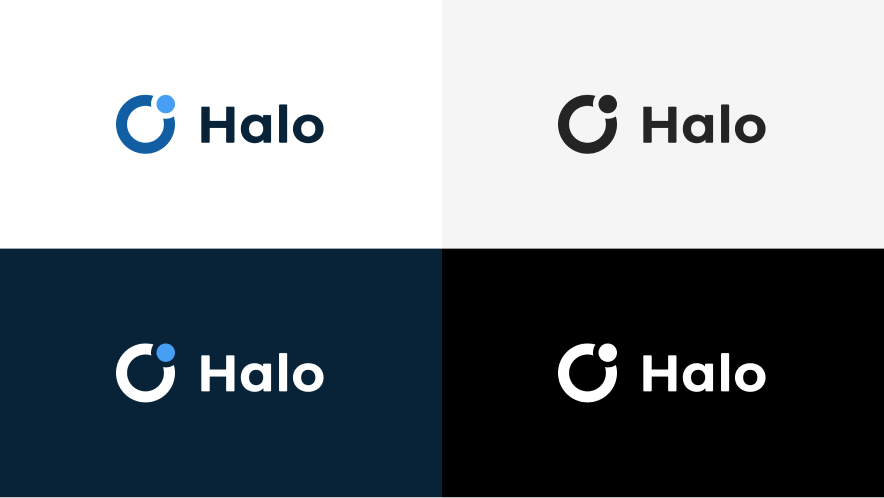
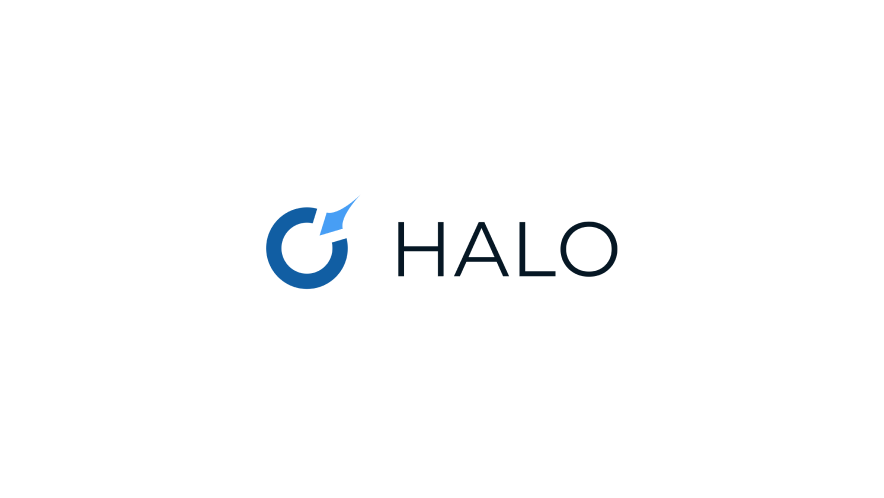
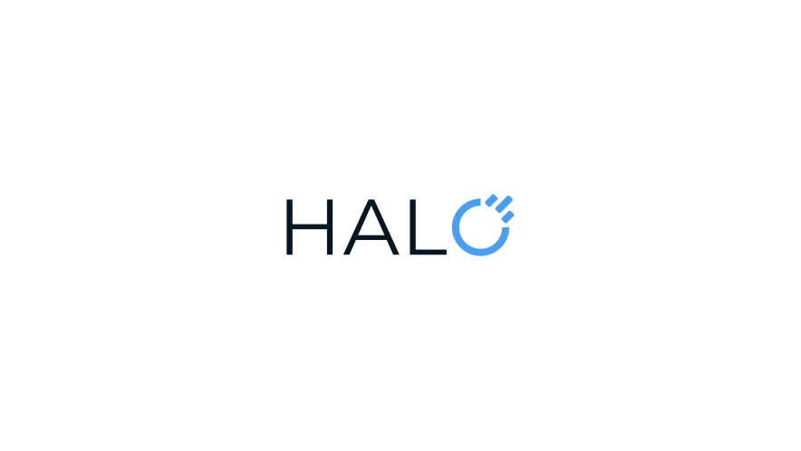

Halo branding
Creating a visual identity for a decision intelligence platform

Overview
When mTab needed a cohesive brand identity for its flagship product Halo, I was the primary designer — working directly with the CEO, CPO, and Marketing team to define and deliver the visual direction.
Challenge
The platform had evolved significantly, but the branding hadn't kept pace.
As mTab grew and Halo became its core product, it needed a visual identity that reflected what it had become — an enterprise-grade platform used by some of the world's biggest brands. The goal was to create minimalist, professional branding flexible enough to work across product UI, marketing, sales materials, and presentations.

Approach
I led the branding work from concept through to delivery. Working closely with the CEO and CPO ensured the direction aligned with the company's strategic positioning, while collaboration with the Marketing team kept it practical for day-to-day use.
I’ve developed a full logo system — including separate marks for mTab, Halo, and a combined mTab Halo lockup, each with horizontal and vertical variants and multiple colour options.
The colour palette was built around a focused set of blues, aligning with the Fluent-based design system already in use across the product. I also created brand guidelines, presentation templates, and supporting assets to ensure consistency across every touchpoint.
Outcome
The new branding unified mTab's Halo presence across the product, website, and all external communications. The logo system and guidelines gave the Marketing and Sales teams a clear, consistent toolkit — and the minimalist direction ensured the brand felt at home alongside the enterprise clients it serves.



